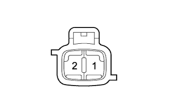

Windshield Washer Motor & Pump Assembly On-vehicle Inspection |
| 1. Inspect Windshield Washer Motor & Pump Assembly |
Operation Check
With the windshield washer motor & pump assembly installed to the windshield washer jar assembly, fill the windshield washer jar assembly with washer fluid.
 |
Check that washer fluid is pumped out from the front side when the battery is connected to each terminal of the connector.
| Tester Connection | Condition | Specified Condition |
|---|---|---|
| Battery positive (+) → 1 Battery negative (-) → 2 | When the battery positive (+) is connected to terminal 1 and the battery negative (-) to terminal 2 | Washer fluid is pumped out from the front side. |